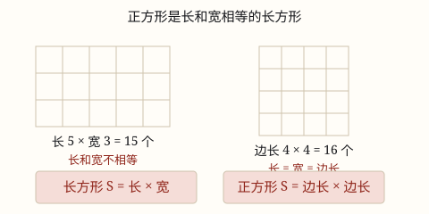

长方形和正方形的面积
长方形的面积 = 长 × 宽，正方形的面积 = 边长 × 边长。公式不是背的，是「数方格」数出来的。
| 所属主题 | 图形的认识与测量 |
|---|---|
| 所属模块 | 图形与几何 |
| 课标学段 | 第二学段（3~4年级） |
| 前置知识 | 面积和面积单位 |
| 核心素养 | 量感几何直观空间观念 |
教材定位
人民教育出版社《2024年版》
对应三下第 4 单元「图形的面积」：长方形和正方形的面积。
课标要求
| 图形与几何·图形的认识与测量 | 结合实例认识周长和面积；探索并掌握长方形、正方形的周长和面积的计算公式。 印刷第 30 页 行为动词：掌握 |
|---|
说明
把一个长方形铺满 1 平方厘米的小方格：长是几厘米，横着每行就能放几个；宽是几厘米，就能放几行。总个数 = 每行个数 × 行数，于是得到 长方形的面积 = 长 × 宽，记作 S = a × b。
正方形是长和宽相等的长方形，所以把「长」和「宽」都换成「边长」，就得到 正方形的面积 = 边长 × 边长，记作 S = a × a = a^2。
两个公式其实是一个。正方形公式不需要单独背，它只是长方形公式在长 = 宽时的样子。
使用场景
装修买材料：铺地板、贴墙纸、买玻璃，都要先算面积才知道买多少。
农业和种植：一块菜地、一个花坛能种多少棵苗，先算面积再乘每平方米的棵数。
做手工和裁剪：给桌面裁一块桌布、给相框裁一块卡纸，算的就是长方形面积。
比较方案：同样长的篱笆围成不同的长方形，面积可以差很多——选哪个划算，靠算面积比。
注意点
单位要先统一再算。长 2 米、宽 50 厘米，不能直接算 2 × 50，要先把 50 厘米化成 0.5 米，或者把 2 米化成 200 厘米。
算的是面积不是周长。看到「围一圈」用周长，看到「铺满、盖住、刷、种」用面积。
正方形面积别写成「边长 × 2」，那是把周长记混了。边长 4 的正方形面积是 4 × 4 = 16，不是 8。
结果要带平方单位，\textcm^2、\textdm^2、\textm^2 三选一，按实际大小挑。
为什么是这样

图 1：正方形是长和宽相等的长方形，所以它的公式只是长方形公式的特例
算理推导
回到面积的起点：面积是「能铺多少个单位小正方形」。
长方形长 5 厘米、宽 3 厘米——横着每行铺 5 个，一共能铺 3 行。总个数 = 5 × 3 = 15。
把「每行个数」换成「长」，把「行数」换成「宽」，就得到 S = \text长 × \text宽。这一步只是给「数方格」起了个名字，没有引入任何新东西。
正方形的长和宽一样长，都叫边长，所以公式变成 S = \text边长 × \text边长。看图 1 右边：边长 4，铺出 4 × 4 = 16 个。
动手实验
在方格纸上画几个长宽不同的长方形（比如 6×2、5×3、4×4），先数方格数出面积，再用公式算一遍，对一对。你会发现：周长都是 16 厘米的三个长方形，面积分别是 12、15、16——周长一样，面积可以不一样。
按场景的例题
例 1（场景：计量与估算） 给书桌配一块桌垫
书桌桌面长 12 分米、宽 6 分米，配一块同样大的桌垫，面积是多少平方分米？
解：每行放 12 个 1 平方分米，能放 6 行，12 × 6 = 72。
答：72 平方分米。
例 2（场景：工程建造） 给一间活动室铺地砖
活动室长 8 米、宽 5 米，用边长 1 米的地砖铺满，需要多少块？
解：先算地面面积 8 × 5 = 40 平方米；每块地砖面积 1 × 1 = 1 平方米；40 ÷ 1 = 40。
答：需要 40 块。
例 3（场景：农业生产） 一块正方形菜地
一块正方形菜地边长 9 米，面积是多少？如果每平方米种 4 棵菜，一共能种多少棵？
解：面积 9 × 9 = 81 平方米；能种 81 × 4 = 324 棵。
答：面积 81 平方米，能种 324 棵。
例 4（场景：校园生活） 给正方形宣传栏换背板
宣传栏是正方形，周长 20 分米，它的面积是多少平方分米？
解：先由周长求边长：20 ÷ 4 = 5 分米。再算面积：5 × 5 = 25。
答：25 平方分米。
常用推论
已知面积和长，求宽：\text宽 = S ÷ \text长；已知面积和宽，求长同理。
正方形已知面积反求边长，就是找一个数自己乘自己等于面积（如面积 25，边长 5）。
周长相等的长方形中，长和宽越接近，面积越大；长和宽相等（正方形）时面积最大。
长方形的长和宽同时扩大到原来的 n 倍，面积就扩大到 n × n 倍。
易错点
错长 2 米、宽 50 厘米，算成 2 × 50 = 100 平方米。
为什么错两个长度单位不统一就相乘了。2 米和 50 厘米要先化成同一个单位。
正确统一成米：50\text厘米 = 0.5\text米，2 × 0.5 = 1 平方米；或统一成厘米：200 × 50 = 10000 平方厘米 = 1 平方米。
错边长 4 的正方形，面积算成 4 × 2 = 8。
为什么错把面积公式和周长公式弄混了。4 × 2 只算了两条边。
正确面积是 4 × 4 = 16 平方厘米；周长才是 4 × 4 = 16 厘米（数值巧合但意义完全不同）。
错看到「用篱笆围一圈」就算面积。
为什么错「围一圈」说的是边界的长度，是周长；「铺、盖、种、刷」才是在说面的大小。
正确先读题判断：围篱笆 → 周长；铺地砖 → 面积。
直观理解
把长方形想成一盒整齐摆好的鸡蛋：横着数有几个，竖着数有几排，总数就是「几个 × 几排」。面积公式只是在替你省下数数的时间。正方形就是横竖一样多的那一盒。
长方形，长乘宽；正方形，边长乘边长。公式不用死记背，一格一格数出来。